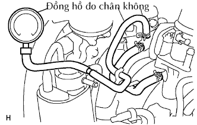

HỆ THỐNG KIỂM SOÁT KHÍ XẢ > KIỂM TRA TRÊN XE |
| 1. KIỂM TRA RÒ RỈ NHIÊN LIỆU |
Kiểm tra bằng quan sát xem các ống mềm, các chỗ nối và các gioăng không bị nứt, rò rỉ hay hư hỏng.
| 2. KIỂM TRA VSV LỌC |
|  |
Kiểm tra rằng ống chân không đã được nối chính xác.
Ngắt ống chân không ra khỏi bộ lọc than hoạt tính và nối đồng hồ đo chân không.
Dùng sơ đồ dưới đây, hãy tiến hành kiểm tra hoạt động của van VSV lọc khi nhiệt độ nước làm mát động cơ là 55°C (131°F) trở xuống (khi động cơ đang nguội - VSV đang đóng).
Sơ đồ hoạt động của VSV lọc.
1. Khi động cơ đang chạy không tải hoặc chạy với tốc độ 2,500 vòng/phút, đồng hồ đo chân không chỉ 1 kPa (25 mmHg, 0.3 in.Hg) trở xuống.
| Kết quả | Quy trình |
| Yes | Sự hoạt động bình thường của VSV lọc |
| No | Đi đến bước tiếp theo |
| Kết quả | Quy trình |
| OK | Kiểm tra dây điện và ECM |
| NG | Thay thế VSV lọc |
Dùng sơ đồ dưới đây, hãy tiến hành kiểm tra hoạt động của van VSV khi nhiệt độ nước làm mát động cơ 80°C (146°F) trở lên (khi động cơ nóng - VSV đang mở).
Sơ đồ hoạt động của VSV lọc.
1. Khi động cơ đang chạy không tải, đồng hồ đo chân không chỉ 40 kPa (300 mmHg, 11.8 in.Hg) trở lên.
| Kết quả | Quy trình |
| Yes | Sự hoạt động bình thường của VSV lọc |
| No | Đi đến bước tiếp theo |
| Kết quả | Quy trình |
| OK | Kiểm tra dây điện và ECM |
| NG | Thay thế VSV lọc |